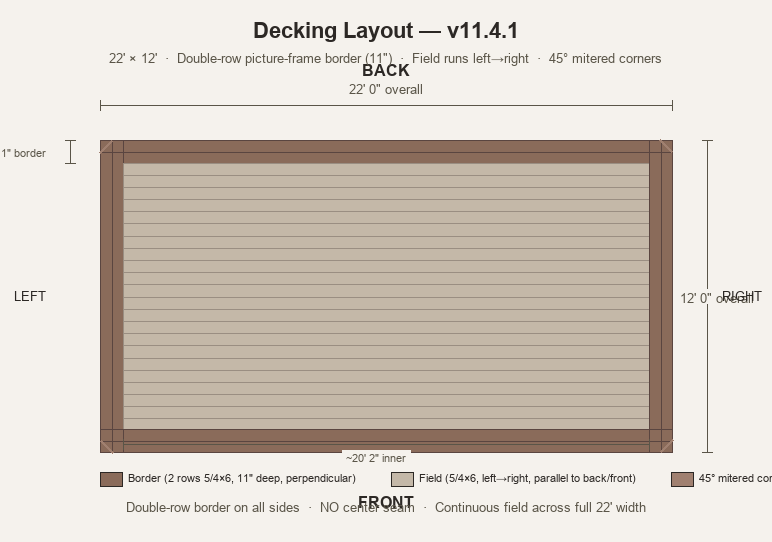

Pool Deck Quick Ref
Simple Rectangular Frame — v11.4
22' × 12' Frame
~7" Height
Doubled Rims
Picture-Frame Border
🏗️ One Simple 22'×12' Frame on Pedestals
Freestanding · No house · Doubled 2×6 rims · Single-row picture-frame border with 45° mitered corners · ECO M + ECO L on stone · No center seam
0Diagrams

Joist Layout

Decking Layout
1Specs at a Glance
Frame Size
22' × 12'
One continuous substructure — no breaks
Inner Field
~20'10" × ~10'6"
After 5.5" single-row border on each side
Deck Height
~7"
2×6 (5.5") + 5/4 (~1") + pedestal · Uniform across frame
Decking Border
Picture-Frame Single Row
5/4×6 on all edges · 5.5" depth · Perpendicular to field · 45° mitered corners
2Structure
Frame (One Continuous Piece)
- Back rim: ~22' doubled 2×6 · Continuous across full width
- Front rim: ~22' doubled 2×6 · Continuous across full width
- Side rims: ~12' doubled 2×6 each · Left and right
- NO center break: The frame is one solid rectangle · No seam · No separate sections
Support
- NO posts in ground · Freestanding on pedestals
- 38× Eurotec ECO M + L (various heights)
- Base: flat stone pavers, compacted gravel, or combo
Framing
- NO doubled beam · Joists sit directly on pedestals/stone
- Doubled 2×6 rims all around (back/front ~22', sides ~12')
- Field joists: 2×6, 16" O.C., 11.5' full length, front-to-back · ~17 joists across 22' width
- NO border blocking needed: Single-row border sits on doubled rim — rim provides support
- Mid-span blocking: 2×6 at ~5.75' from back · One row across full 22' width · ~16 pieces
- Diagonal bracing: 2×4 cross-bracing between field joists at corners · Prevents racking
Decking Direction
- Inner field: Runs left→right (parallel to back rim, perpendicular to joists)
- Border: Runs perpendicular (front-to-back on back/front, left→right on sides)
- Corners: 45° mitered joints where border boards meet at corners
- NO center seam: Field is continuous across full 22' width
Expansion Gaps (Georgia Climate)
- 5/4×6 main deck: 1/8"–3/16" between boards
- End gaps at rim: ½" (allows board movement)
- Dark stain absorbs heat → boards expand more → err slightly wider
Inspector Notes
- Freestanding = no ledger hold-downs required
- Georgia inspectors may require hurricane ties or strap ties at outer rim · Check before build
- 36" railing height is residential standard
3Materials (On Hand)
| Qty | Size | Use |
|---|---|---|
| 38 + 16 | 5/4 × 6 × ~12' | Decking — field boards + border stock · Need 16 more |
| 4 | 2 × 6 × ~22' | Back rim (2) + front rim (2), doubled = 4 boards total · Continuous |
| 4 | 2 × 6 × ~12' | Left side rim (2) + right side rim (2), doubled = 4 boards total |
| ~17 | 2 × 6 × 11'6" | Field joists · Full length, no cuts · ~17 at 16" O.C. across 22' |
| ~16 | 2 × 6 (scrap) | Mid-span blocking only · Cut from offcuts · ~14–18" lengths |
| 38 | Eurotec ECO M + L | Pedestals · Mix of M (1.4"–2.6") + L (2.6"–5.1") · ~55–65 needed total |
| ✓ | 1-5/8" Butyl Joist Tape | 2 rolls on hand · Apply to all joist/rim tops before decking · May need 1 more |
| 1.5 lb | GRK RSS 5/16"×4" Structural Screws | Rim-to-joist connections · ~$35 |
4Stain Checklist
💡 All stain supplies on hand: 5 gal BEHR Stonehedge, 9" roller + covers, 3" brush, 2" edge brush, painter's tape, drop cloths
1
Pressure wash all boards · Let dry 48+ hrs
2
Label every piece with position · Painter's tape + marker
3
End grain first: Heavy coat on all cut ends · Double coat · Let dry 30 min
4
Roll faces: 9" roller, ¼" nap · Work in sections · Maintain wet edge
5
Back-brush: 3" quality brush · Work stain into cracks · Hand-finished look
6
Flip & repeat: Dry 4–6 hrs, flip, stain back faces and edges
7
Second coat (optional): After 24 hrs · Two thin > one heavy
💡 Morning shade = friend · Hot sun dries stain too fast · Work early or in shade
5Team Roles
Site Lead
You · Cut list · Roller operator · Problem solver
Stain Boss
Wife · Quality control · Catches missed spots
Prep Crew
Daughter-in-Law · Wash · Stack · Label · Move boards
Brush Crew
Daughter · End grain · Edges · Back-brushing
6Build Order
1
Site Prep: Clear · Grade ±1" · Stone/gravel base · Layout pedestals for full 22'×12' frame
2
Stain: All 6 faces before assembly · 2–3 days · Dry weather
3
Frame: Doubled 2×6 rims (~22' back/front, ~12' sides) · ~17 field joists 16" O.C. (11.5' length) · On pedestals · Level to ~7"
4
Blocking: Mid-span blocking at ~5.75' across full 22' · ~16 pieces · NO border blocking needed (doubled rim supports border)
5
Joist Tape: Apply to all joist tops and rim tops before decking
6
Inner Field Decking: 5/4×6 left→right (parallel to back rim, perpendicular to joists) · 1/8"–3/16" gaps · 2.5" screws · Two per joist · Stop 5.5" from edges for border
7
Picture-Frame Border: Full boards perpendicular to edge · Back/front: 12' boards front-to-back · Sides: ~10'6" boards left→right (perpendicular to field) · 45° mitered corners
8
Railings + Step: 6×6 posts · 2×6 rails · 36" height · Box step on back edge · 7" rise
7Height Reference
| Element | Dimension | Notes |
|---|---|---|
| Joist | 2×6 (5.5") | Front-to-back, 11.5' length |
| Decking | 5/4×6 (~1") | Field + single-row border |
| Pedestal | ECO M: ~0.5"–1" | Adjustable threaded barrel |
| Total Height | ~7–7.5" | Above grade · Well above coping |
8Railings & Step
- Posts: 6×6 short pieces (~3' total) · Surface mount with lags into blocking
- Rails: 2×6 horizontal · Two per bay · 36" top · ~18" middle
- Step: Box step · Single 7" rise · 2×6 frame · 5/4 tread · 3' wide min
- No gate: Continuous railing · Step provides access
9Tool Checklist
Impact Driver
T25 + square bits · Primary tool
Circular Saw
Fine-tooth blade · Joist + board cuts
Tape + Square
25' tape · Speed square · Layout
Level + String
2' level · String line for straight
Roller + Brushes
9" roller, ¼" nap · 3" + 2" brushes
Sawhorses + Tarps
Staining station · Keep boards off ground
10Timeline
| Phase | Days | Weather |
|---|---|---|
| Site Prep + Stain | 2–3 | Dry, 60–80°F |
| Framing (one 22'×12' frame) | 1–2 | Dry, no wind |
| Decking | 1–2 | Dry |
| Railings + Step | ½ | Any |
| Total | 4–7 days | — |
11Reminders
💡 One frame = simpler leveling · Level one continuous frame and the whole deck is flat. No worrying about sections at different heights.
💡 Test section first · Build 4'×4' prototype before full build · Verify heights and feel
💡 Leave labels on · Painter's tape labels stay until piece is installed
⚠️ Don't over-tighten pedestal threads · Plastic threads strip if reefed · Snug is enough
💡 Start staining early · Takes longer than building · Wash boards 2 days before
💡 45° mitered corners look pro · Worth the extra cut · Pre-drill at thin miter point to prevent splitting